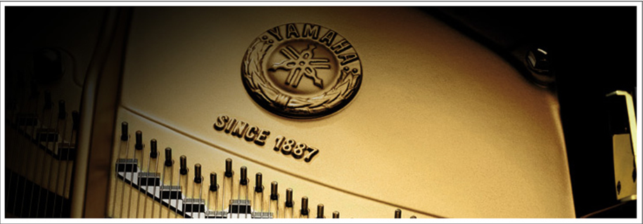

- 集团概况
- 企业大事记
- 品牌文化
- 产品发展史
-
集团概况
雅马哈公司是在1887年成立,具有悠久历史的公司。雅马哈通过全世界范围的销售公司,在世界市场占有稳固的位置
百多年前, -个叫山叶寅楠的年轻企业家着手制作高品质的簧管风琴并创建了雅马哈公司。久,公司不仅生产出日本台钢琴,同时得到了海外的认可。1904年 ,雅马哈钢琴和风琴在圣路易世界博览会上荣获荣誉大奖
基于良好的开端,雅马哈公司逐渐发展成为全球广受欢迎的乐器制造商。随着公司的发展,雅马哈公司凭借其- -直秉承的前沿技术和精湛的工艺,在更广范围内的产品和服务领域进行多元化投资。
如今,雅马哈在乐器、视听产品、信息技术、新媒体业务、家具、汽车配件、特种金属、音乐教育以及度假村等商业领域一-直处于地位。然而,正如我们的音乐起源一样,无论我们从事什么行业,也无论我们在哪个,我们始终追求公共价值的完美协调,正是这些形成了雅马哈世界。
-
企业大事记
年份 大事记 1887 雅马哈创始人山叶寅楠制作出他的第一台簧管风琴 1897 成立日本乐器制造株式会社( 雅马哈集团前身)，注册资本为10万日元 1900 开始生产立式钢琴 1949 股票于东京证券交易所上市 1954 簧管风琴教室(雅马哈音乐中心前身)开课;开始生产Hi-Fi播放器(音响产品) 1955 成立雅马哈发动机株式会社(日本乐器制造株式会社摩托车部]独立) 1958 开始生产体育用品;第一家海外子公司在墨西哥成立 1959 开始生产电子琴 1960 在美国成立销售子公司一雅 马哈国际股份有限公司(雅马哈美国公司前身 1962 开始发展娱乐休闲事业 1964 开始生产居家用品 1965 开始生产管乐器 1966 成立雅马哈音乐振兴会;事业拓展至欧洲，在西德成立销售子公司雅—马哈欧洲公司 1968 在日本按市价发行股票 1971 开始生产半导体 1987 创业100周年纪念，更名为雅马哈株式会社(即雅马哈集团) 1989 在中国成立电子乐器生产及销售子公司天津雅 马哈电子乐器公司 2002 成立雅马哈乐器音响(中国)投资有限公司;在德国成立欧洲总部雅 马哈音乐欧洲控股公司(雅马哈音乐欧洲公司前身)成立 2005 收购德国Steinberg媒体技术有限公司 2007 成立音乐娱乐事业控股公司 2008 收购贝森朵夫钢琴( L. Bosendorfer Klavierfabrik GmbH ) ; 收购NEXO音响( NEXO S.A. ) 2010 重建雅马哈银座大厦,包括购物区、音乐厅、录音室等转让居家用品子公司股权;所有在日的雅马哈钢琴制造工厂整合至日本挂川工厂 2012 所有在日的雅马哈管乐器制造工厂整合至日本丰冈工厂;创业125周年纪念( 10月12日起) 2013 成立从事日本国内乐器、音响设备及音乐中心业务的雅马哈音乐日本公司 2014 收购美国的乐器音响产品厂家Line 6和Revolabs -
品牌文化
雅马哈的历史是从一台坏掉的风琴开始的。
那是在1887年， 被日本并送寻常小学视为宝贝的美国产风琴突然不响了， 受到修理委托的是当时身为医疗器械修理师的山野宝南。 次看到风琴内部构造的宝南对这种乐器产生了兴趣
于是，他以修理中所观察到的构造为基础， 与装潢工匠和河西三郎一起制造出了一个有一个的零件。 经过63天的反复试验，日本泰国产风琴终于诞生了， 为了让完成的风琴受审查，两人用扁担扛着风琴徒步翻阅过想跟领， 千里迢迢来到了东京的音乐调差所（现在东京艺大）。 但是，面对“风琴外形虽好，但调律不准确，难以使用”这样残酷的评价， 两人很失望。“不能因为这点挫折前功尽弃，让初的职员彻底实现吧！” 这样，宝南留在了东京， 以特别旁听生的身份在音乐调差所从零开始学习音乐理论和调律方法。 1个月的突击学习之后，宝南回到了滨松，开始日以继夜地专心致力于风琴的知错， 终于完成了第二号风琴，第二次审查得到了“可以代替进口风琴的”认定。i889年，宝南成立了合资公司山野风琴的制造所 。8年后，日本乐器制造梳理会社成立。第二年，确定“音叉”为社章，” 沿着音叉的凤凰图‘为商标。在当时的风琴上，都买会这这幅凤凰图。
1889年，宝南圆度美国市场内钢琴工程， 推荐钢琴的国产化等很多举措都走在了时代的前列。 宝南先生的创业精神、远见做事和办事能力的风格， 正式奠定了雅马哈品牌的基础。
左图：创始人山野宝南（1851-1916） 右图：山野宝南用边带扛着封印徒步翻阅想跟领

雅马哈的logo标志是雅马哈品牌的象征。
紫色，历来都是被视为高贵的颜色， 给人以优雅和高品位的印象，因为与乐器和音乐的雅马哈事业相匹配， 而采用为企业色。作为雅马哈的象征色，又被称作“雅马哈紫罗兰色”。
由创始人扇叶宝南的形————扇叶的因为字母，与音叉组合而成。 3个音叉代码雅马哈的三大部门————技术、制造和销售之间的紧密合作 ，而以音叉所象征的音乐为中心向世界（外圈）的延伸代表雅马哈永无止境的生命力。 此外，这个标志也被富裕了音乐的基本元素：旋律、和谐与节奏相协调的意义。
-
产品发展史
- 1880
- 1900
- 1910
- 1950
- 1960
- 1970
- 1980
- 1990
- 2000
- 2010
- 1887
- 簧管风琴
- 1990
- 立式钢琴
- 1902
- 三角钢琴
- 1887
- 簧管风琴
- 1990
- 立式钢琴
- 1887
- 三角钢琴
- 1887
- 簧管风琴
- 1990
- 立式钢琴
- 1887
- 三角钢琴